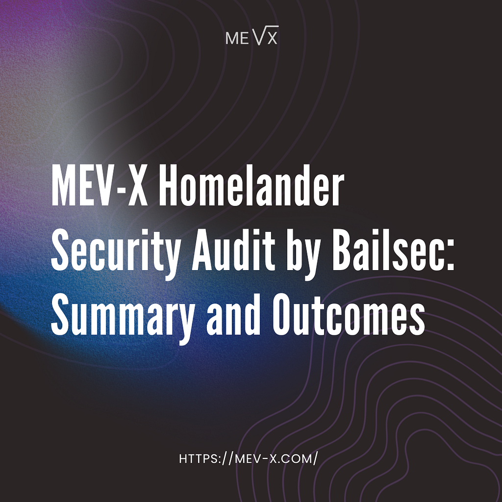

We recently completed an independent security audit of MEV-X Homelander, conducted by Bailsec. This post summarizes the scope of the audit, its findings, and what the results mean for the safety and reliability of the system.

Audit Scope and Methodology
The audit covered the MEV-X Homelander smart contract, implemented in Solidity and designed to function as a post-swap component within an AMM architecture. The assessment was conducted through manual code review and focused on the correctness and safety of the contract’s on-chain logic as deployed and executed in the context of the AMM framework.
During the review, the auditors analyzed the contract’s execution flow across its lifecycle, including the invocation of post-swap hooks, state access patterns, and control flow during internal MEV-related execution. The review examined how the contract interacts with the AMM after a swap updates pool balances, and how execution proceeds under the contract’s defined logic paths.
The audit also examined access control assumptions, privilege boundaries, and administrative mechanisms, as well as how the contract handles failure and revert conditions during execution.
High-Level Audit Results
The audit did not identify any security vulnerabilities in the reviewed contract. All observations reported by the auditors fall into non-exploitable categories and relate to general design assumptions and operational considerations rather than to flaws in the contract’s execution logic.
In particular, the audit documentation notes the following properties of the reviewed contract:
- The contract logic does not introduce execution paths that would allow unauthorized access to or extraction of pool funds;
- Unsuccessful internal MEV-related execution paths are isolated from the user swap flow and do not alter the swap outcome under normal operating conditions;
- Scenarios in which no valid internal backrun is available are handled within the hook logic without requiring the user transaction to be reverted;
- Administrative mechanisms are in place that allow the plugin to be disabled or removed from a pool by protocol governance.
Taken together, these points describe an execution model in which internal MEV handling is explicitly isolated from core AMM behavior. The reviewed contract does not rely on successful MEV execution for swap completion and does not introduce additional execution dependencies into the swap lifecycle.
Within the scope of the audit, the absence of identified security vulnerabilities indicates that Homelander’s post-swap logic operates without exposing pool funds, altering swap correctness, or expanding the protocol’s on-chain attack surface beyond its intended design. The contract’s behavior under both normal and non-ideal conditions remains bounded by clear execution and administrative constraints.
Execution-Level Safety Properties
Homelander is designed around a constrained execution model. Internal MEV logic is scoped explicitly to post-swap processing and does not participate in swap execution or price formation. The contract’s responsibilities are limited to a clearly defined subset of the overall AMM execution flow.
All swaps are executed according to the AMM’s native logic before any internal MEV-related processing occurs. Post-swap logic is evaluated only after pool balances have been updated and does not influence whether a swap completes successfully. Swap correctness and state transitions remain entirely governed by the underlying AMM.
The contract operates on finalized post-swap state and does not introduce additional asset flows or authority over pool balances. Its interaction surface is limited to reading state and executing bounded post-swap actions. Administrative controls are separate from execution logic and allow the component to be disabled or removed without affecting trading functionality.
As defined by this execution model, internal MEV handling remains isolated from core AMM mechanics. The contract’s behavior is confined to post-swap execution paths, with clearly defined boundaries on what it can and cannot affect.